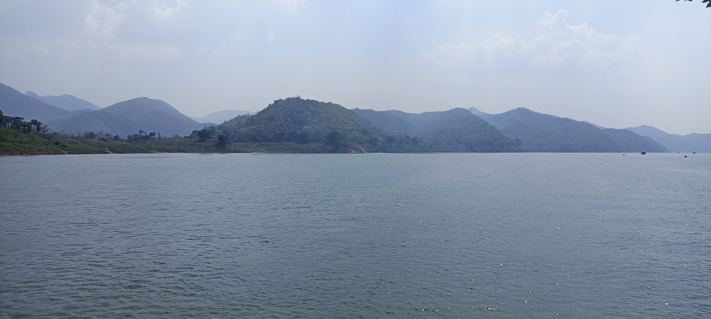
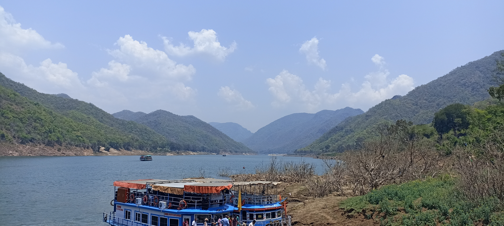

Bhadrachalam in Telangana is well-known as a pilgrimage destination. Bhadrachalam, located on the Godavari River, is a sacred pilgrimage site. This town is well-known for its Lord Rama temple.
Morning 8 AM : Departure from Hyderabad to Bhadrachalam (320 Km / 6 Hrs). Visit Parnasala (35 Km / 1 Hr) the place where Lord Sri Rama, Sita and Laxmana stayed during Vanavas. Later return to Bhadrachalam and visit Sri Sitarama Temple.